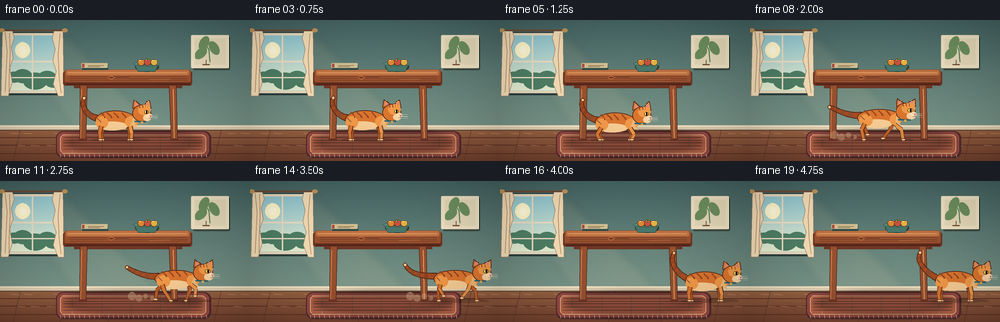
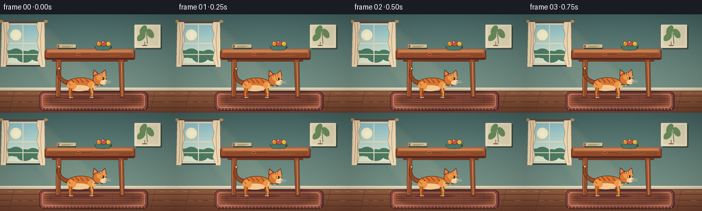
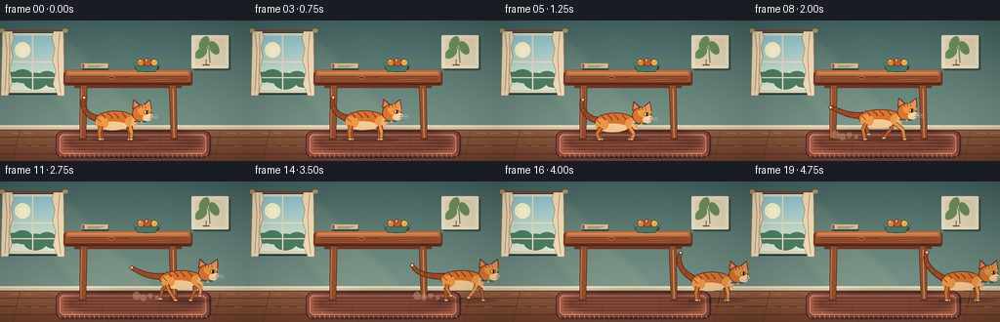
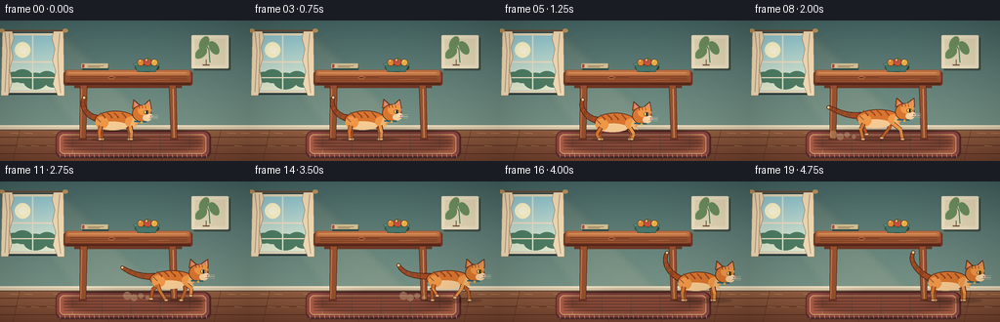

CODING AGENTS AS PIXEL WORLD MODELS
traex/DeepSeek-V4.1-Flash · dynamic_spatial_relationship_0016
点击播放 · 原生 RGB 像素
此结果可播放，但该运行尚未通过最终提交审核。页面展示不代表评测通过。
逐轮保存的候选
回放视频、检查图与代码变化。
每份候选均可单独播放。实际图片检查记录在下方工具轨迹中。
候选 01播放与检查图
点击播放 · 原生 RGB 像素

展开代码变化
--- 上一保存版本
+++ 本次保存版本
@@ -0,0 +1,506 @@
+from __future__ import annotations
+
+import math
+from pathlib import Path
+
+import numpy as np
+from PIL import Image, ImageDraw, ImageFilter
+
+import artifact_io
+
+
+ROOT = Path(__file__).resolve().parent
+WIDTH = 256
+HEIGHT = 144
+FRAMES = 20
+FPS = 4.0
+SS = 4
+
+W = WIDTH * SS
+H = HEIGHT * SS
+
+
+def sc(value: float) -> int:
+ return int(round(value * SS))
+
+
+def box(x0: float, y0: float, x1: float, y1: float) -> tuple[int, int, int, int]:
+ return sc(x0), sc(y0), sc(x1), sc(y1)
+
+
+def rgba(hex_color: str, alpha: int = 255) -> tuple[int, int, int, int]:
+ value = hex_color.lstrip("#")
+ return int(value[0:2], 16), int(value[2:4], 16), int(value[4:6], 16), alpha
+
+
+def mix(a: tuple[int, int, int], b: tuple[int, int, int], t: float) -> tuple[int, int, int]:
+ return tuple(int(round(a[index] + (b[index] - a[index]) * t)) for index in range(3))
+
+
+def rounded(draw: ImageDraw.ImageDraw, bounds, radius, fill, outline=None, width=0):
+ draw.rounded_rectangle(bounds, radius=sc(radius), fill=fill, outline=outline, width=sc(width))
+
+
+def ellipse(draw: ImageDraw.ImageDraw, bounds, fill, outline=None, width=0):
+ draw.ellipse(bounds, fill=fill, outline=outline, width=sc(width))
+
+
+def polygon(draw: ImageDraw.ImageDraw, points, fill, outline=None, width=0):
+ scaled = [(sc(x), sc(y)) for x, y in points]
+ draw.polygon(scaled, fill=fill)
+ if outline is not None and width:
+ draw.line(scaled + [scaled[0]], fill=outline, width=sc(width), joint="curve")
+
+
+def line(draw: ImageDraw.ImageDraw, points, fill, width):
+ draw.line([(sc(x), sc(y)) for x, y in points], fill=fill, width=max(1, sc(width)), joint="curve")
+
+
+def bezier(points: list[tuple[float, float]], steps: int = 40) -> list[tuple[float, float]]:
+ if len(points) == 4:
+ p0, p1, p2, p3 = points
+ result = []
+ for index in range(steps + 1):
+ t = index / steps
+ u = 1.0 - t
+ x = u**3 * p0[0] + 3 * u**2 * t * p1[0] + 3 * u * t**2 * p2[0] + t**3 * p3[0]
+ y = u**3 * p0[1] + 3 * u**2 * t * p1[1] + 3 * u * t**2 * p2[1] + t**3 * p3[1]
+ result.append((x, y))
+ return result
+ if len(points) == 3:
+ p0, p1, p2 = points
+ result = []
+ for index in range(steps + 1):
+ t = index / steps
+ u = 1.0 - t
+ result.append((u * u * p0[0] + 2 * u * t * p1[0] + t * t * p2[0],
+ u * u * p0[1] + 2 * u * t * p1[1] + t * t * p2[1]))
+ return result
+ return points
+
+
+def draw_tapered_curve(draw: ImageDraw.ImageDraw, points, start_width, end_width, fill, outline=None):
+ if outline is not None:
+ for index, (x, y) in enumerate(points):
+ t = index / max(1, len(points) - 1)
+ radius = (start_width + (end_width - start_width) * t) * 0.5 + 0.8
+ draw.ellipse((sc(x - radius), sc(y - radius), sc(x + radius), sc(y + radius)), fill=outline)
+ for index, (x, y) in enumerate(points):
+ t = index / max(1, len(points) - 1)
+ radius = (start_width + (end_width - start_width) * t) * 0.5
+ draw.ellipse((sc(x - radius), sc(y - radius), sc(x + radius), sc(y + radius)), fill=fill)
+
+
+def make_background() -> Image.Image:
+ y = np.linspace(0.0, 1.0, H, dtype=np.float32)[:, None]
+ wall_top = np.array([70, 103, 102], dtype=np.float32)
+ wall_bottom = np.array([137, 165, 151], dtype=np.float32)
+ wall = wall_top + (wall_bottom - wall_top) * y[:, :, None]
+ wall = np.repeat(wall, W, axis=1)
+
+ floor_y = int(111 * SS)
+ floor_t = np.linspace(0.0, 1.0, H - floor_y, dtype=np.float32)[:, None]
+ floor_top = np.array([151, 101, 71], dtype=np.float32)
+ floor_bottom = np.array([116, 70, 52], dtype=np.float32)
+ floor = floor_top + (floor_bottom - floor_top) * floor_t[:, :, None]
+ floor = np.repeat(floor, W, axis=1)
+ wall[floor_y:] = floor
+
+ rng = np.random.default_rng(16)
+ texture = rng.normal(0.0, 1.5, (H, W, 1)).astype(np.float32)
+ wall = np.clip(wall + texture, 0, 255).astype(np.uint8)
+ image = Image.fromarray(wall, "RGB").convert("RGBA")
+ draw = ImageDraw.Draw(image, "RGBA")
+
+ # Soft late-afternoon light from the window.
+ light = Image.new("RGBA", (W, H), (0, 0, 0, 0))
+ ld = ImageDraw.Draw(light, "RGBA")
+ ld.polygon([(sc(4), sc(15)), (sc(70), sc(17)), (sc(176), sc(124)), (sc(86), sc(124))],
+ fill=(255, 224, 166, 18))
+ ld.polygon([(sc(17), sc(19)), (sc(49), sc(20)), (sc(134), sc(123)), (sc(86), sc(123))],
+ fill=(255, 237, 194, 14))
+ light = light.filter(ImageFilter.GaussianBlur(sc(4)))
+ image = Image.alpha_composite(image, light)
+ draw = ImageDraw.Draw(image, "RGBA")
+
+ # Floor boards and their seams.
+ for board_y in (119.5, 128.0, 136.5):
+ line(draw, [(0, board_y), (256, board_y)], (90, 52, 42, 70), 0.8)
+ for index, x in enumerate((20, 68, 118, 172, 226)):
+ line(draw, [(x, 112), (x - 7, 144)], (94, 56, 44, 45), 0.55)
+ for index in range(22):
+ x = (index * 37 + 11) % 252
+ y = 115 + (index * 13) % 26
+ line(draw, [(x, y), (x + 8, y + 0.5)], (232, 177, 126, 18), 0.45)
+
+ # Baseboard.
+ draw.rectangle(box(0, 107.2, 256, 112.0), fill=(221, 206, 177, 255))
+ draw.rectangle(box(0, 107.2, 256, 108.6), fill=(242, 228, 198, 255))
+ line(draw, [(0, 112.1), (256, 112.1)], (80, 66, 58, 90), 0.7)
+
+ # Window shadow and frame.
+ rounded(draw, box(6, 12, 61, 76), 2.2, (45, 64, 64, 75))
+ rounded(draw, box(8, 13, 59, 74), 1.5, (228, 217, 190, 255))
+ rounded(draw, box(10.5, 15.5, 56.5, 71.5), 0.7, (153, 201, 207, 255))
+
+ sky_top = np.array([145, 199, 209], dtype=np.float32)
+ sky_bottom = np.array([228, 236, 208], dtype=np.float32)
+ sky_h = sc(56)
+ sky = sky_top + (sky_bottom - sky_top) * np.linspace(0, 1, sky_h)[:, None, None]
+ sky = np.repeat(sky, sc(46), axis=1).astype(np.uint8)
+ sky_image = Image.fromarray(sky, "RGB").convert("RGBA")
+ image.paste(sky_image, (sc(10.5), sc(15.5)))
+ draw = ImageDraw.Draw(image, "RGBA")
+ ellipse(draw, box(15, 22, 31, 38), (255, 247, 205, 125))
+ ellipse(draw, box(19, 26, 27, 34), (255, 251, 224, 170))
+ # Distant soft foliage.
+ for cx, cy, r in ((14, 58, 8), (23, 57, 10), (36, 62, 12), (48, 58, 9), (54, 63, 8)):
+ ellipse(draw, box(cx - r, cy - r * 0.7, cx + r, cy + r * 0.7), (79, 128, 104, 95))
+ draw.rectangle(box(32.7, 15.5, 34.1, 71.5), fill=(231, 221, 197, 255))
+ draw.rectangle(box(10.5, 41.7, 56.5, 43.3), fill=(231, 221, 197, 255))
+ draw.rectangle(box(10.5, 58.0, 56.5, 59.1), fill=(231, 221, 197, 255))
+
+ # Linen curtains.
+ curtain_left = [(2.5, 10), (12, 10), (14, 18), (11, 27), (13, 38), (9.5, 49), (12, 63), (8, 77), (1, 77)]
+ curtain_right = [(65, 10), (55, 10), (53, 18), (56, 29), (53.5, 41), (57, 52), (54, 65), (59, 77), (66, 77)]
+ polygon(draw, curtain_left, (239, 219, 182, 244), outline=(153, 126, 105, 100), width=0.6)
+ polygon(draw, curtain_right, (239, 219, 182, 244), outline=(153, 126, 105, 100), width=0.6)
+ for points in (
+ [(5, 12), (7, 31), (6, 53), (5, 73)],
+ [(9.5, 13), (10, 35), (9, 58), (9, 74)],
+ [(61, 13), (59, 35), (60, 58), (62, 74)],
+ ):
+ line(draw, points, (181, 147, 119, 105), 0.65)
+ draw.rectangle(box(0.8, 9.5, 67, 11), fill=(108, 79, 62, 255))
+ ellipse(draw, box(-1, 8.2, 4.5, 12.2), (188, 148, 93, 255))
+ ellipse(draw, box(64, 8.2, 69.5, 12.2), (188, 148, 93, 255))
+
+ # Framed botanical print on the right wall.
+ rounded(draw, box(198, 17, 236, 51), 1.5, (62, 78, 70, 55))
+ rounded(draw, box(196, 15, 234, 49), 1.2, (235, 224, 195, 255))
+ draw.rectangle(box(199.5, 18.5, 230.5, 45.5), fill=(225, 215, 184, 255))
+ line(draw, [(215, 43), (214, 30), (210, 23)], (83, 122, 91, 255), 1.1)
+ for cx, cy, rx, ry, angle in ((209, 23, 3.5, 7, -28), (219, 28, 3.5, 7, 32), (206, 33, 3.0, 5.5, -48)):
+ leaf = Image.new("RGBA", (sc(12), sc(18)), (0, 0, 0, 0))
+ ldraw = ImageDraw.Draw(leaf, "RGBA")
+ ellipse(ldraw, box(1.5, 1.5, 10.5, 16.5), (108, 143, 97, 255))
+ leaf = leaf.rotate(angle, resample=Image.Resampling.BICUBIC, expand=False)
+ image.alpha_composite(leaf, (sc(cx - 6), sc(cy - 9)))
+ draw = ImageDraw.Draw(image, "RGBA")
+ line(draw, [(211, 40), (211, 45.5)], (99, 79, 61, 210), 0.8)
+ draw.rectangle(box(207.5, 45.0, 214.5, 46.0), fill=(121, 88, 61, 255))
+
+ return image
+
+
+def draw_rug(draw: ImageDraw.ImageDraw):
+ rounded(draw, box(57, 113, 216, 141), 7, (83, 49, 52, 55))
+ rounded(draw, box(58, 114, 214, 139), 6, (151, 76, 70, 230))
+ rounded(draw, box(61, 116.5, 211, 136.5), 4.5, (181, 103, 78, 235), outline=(231, 187, 140, 180), width=0.8)
+ for y in (119.2, 122.4, 125.6, 128.8, 132.0):
+ line(draw, [(65, y), (207, y)], (111, 61, 58, 75), 0.55)
+ for x in (74, 104, 134, 164, 194):
+ line(draw, [(x, 117), (x, 136)], (238, 201, 154, 38), 0.5)
+ # Fringe.
+ for x in range(61, 212, 5):
+ line(draw, [(x, 137.1), (x + 0.5, 140.0)], (236, 209, 164, 175), 0.55)
+
+
+def draw_table_shadow(image: Image.Image):
+ layer = Image.new("RGBA", (W, H), (0, 0, 0, 0))
+ d = ImageDraw.Draw(layer, "RGBA")
+ d.ellipse(box(66, 112, 208, 137), fill=(48, 30, 29, 100))
+ d.ellipse(box(79, 117, 185, 131), fill=(43, 26, 25, 70))
+ layer = layer.filter(ImageFilter.GaussianBlur(sc(3.2)))
+ return Image.alpha_composite(image, layer)
+
+
+def draw_table(draw: ImageDraw.ImageDraw):
+ wood_dark = rgba("#6b382a")
+ wood_mid = rgba("#965333")
+ wood_light = rgba("#bd7447")
+ wood_high = rgba("#db9762")
+
+ # Back apron and legs.
+ draw.rectangle(box(76, 61, 186, 69), fill=wood_dark)
+ draw.rectangle(box(79.5, 63, 181.5, 68), fill=(113, 58, 39, 255))
+ polygon(draw, [(82, 65), (89, 65), (87.7, 123), (81.8, 123)], wood_mid, outline=(73, 37, 29, 255), width=0.45)
+ polygon(draw, [(173, 65), (180, 65), (181.2, 123), (175.3, 123)], wood_mid, outline=(73, 37, 29, 255), width=0.45)
+ line(draw, [(83.5, 70), (82.5, 120)], wood_light, 1.2)
+ line(draw, [(177.0, 70), (178.0, 120)], wood_high, 1.1)
+ draw.rectangle(box(80.5, 120.5, 88.8, 123.0), fill=wood_dark)
+ draw.rectangle(box(174.5, 120.5, 182.0, 123.0), fill=wood_dark)
+
+ # Thick tabletop with lit top surface and a dark front edge.
+ rounded(draw, box(65, 52, 197, 66.5), 2.5, wood_dark)
+ rounded(draw, box(66.5, 50.5, 195.5, 63.5), 2.2, wood_mid)
+ rounded(draw, box(68, 51.0, 194, 56.2), 1.6, wood_light)
+ line(draw, [(70, 53.4), (191, 53.4)], wood_high, 0.9)
+ draw.rectangle(box(67.5, 63.2, 195, 66.2), fill=(104, 51, 36, 255))
+ line(draw, [(68, 65.1), (194.5, 65.1)], (67, 32, 26, 170), 0.8)
+ for y, alpha in ((57.2, 48), (59.3, 40), (61.2, 33)):
+ line(draw, [(72, y), (191, y - 0.4)], (78, 39, 30, alpha), 0.45)
+ # Wood knots and grain.
+ ellipse(draw, box(111, 57.0, 117, 60.0), (117, 61, 38, 55), outline=(217, 137, 85, 65), width=0.45)
+ line(draw, [(119, 58.0), (132, 57.9)], (108, 54, 36, 60), 0.45)
+ line(draw, [(153, 60.4), (174, 59.8)], (223, 146, 91, 58), 0.45)
+
+ # Book and ceramic bowl make the table legible at thumbnail size.
+ rounded(draw, box(84, 45.3, 111, 50.8), 0.8, (46, 77, 74, 255))
+ rounded(draw, box(83.3, 44.0, 110.5, 48.8), 0.8, (206, 189, 147, 255))
+ draw.rectangle(box(84.0, 44.7, 86.2, 48.2), fill=(169, 79, 67, 255))
+ line(draw, [(90, 46.2), (106, 46.2)], (119, 102, 76, 170), 0.55)
+ line(draw, [(90, 47.4), (102, 47.4)], (119, 102, 76, 145), 0.45)
+
+ ellipse(draw, box(138, 43.0, 163, 52.8), (57, 64, 49, 70))
+ polygon(draw, [(137, 44.0), (163, 44.0), (159, 52.5), (141, 52.5)], (74, 120, 109, 255),
+ outline=(42, 78, 72, 255), width=0.5)
+ ellipse(draw, box(136.2, 42.6, 163.8, 47.0), (93, 144, 125, 255), outline=(47, 91, 82, 255), width=0.55)
+ ellipse(draw, box(140.0, 43.5, 160.0, 46.0), (47, 87, 78, 90))
+ for cx, cy, r, color in ((144, 43.0, 3.6, "#d98a36"), (151, 42.5, 3.9, "#c85443"), (158, 43.0, 3.5, "#e0b247")):
+ ellipse(draw, box(cx - r, cy - r, cx + r, cy + r), rgba(color), outline=(107, 56, 38, 180), width=0.4)
+ ellipse(draw, box(cx - r * 0.45, cy - r * 0.75, cx - r * 0.05, cy - r * 0.35), (255, 225, 168, 150))
+ # A small green stem.
+ line(draw, [(151, 39.0), (151, 42.5)], (69, 103, 65, 255), 0.65)
+ polygon(draw, [(151, 39.2), (155, 37.0), (153.0, 40.4)], (84, 122, 77, 255))
+
+
+def leg_pose(hip_x: float, hip_y: float, phase: float | None, front: bool, mode: str) -> tuple[float, float, float, float]:
+ ground = 121.4
+ if mode == "crouch":
+ direction = 1 if front else -1
+ paw_x = hip_x + direction * 1.5
+ knee_x = hip_x + direction * 4.0
+ knee_y = hip_y + 6.5
+ return knee_x, knee_y, paw_x, ground
+ if phase is None:
+ paw_x = hip_x + (1.0 if front else -0.8)
+ knee_x = hip_x + (1.5 if front else -1.5)
+ knee_y = hip_y + 7.0
+ return knee_x, knee_y, paw_x, ground
+
+ swing = math.sin(phase)
+ lift = max(0.0, math.cos(phase)) * 5.0
+ stride = 10.0 if front else 9.0
+ paw_x = hip_x + stride * swing
+ paw_y = ground - lift
+ knee_x = hip_x + stride * 0.52 * swing + (2.8 if front else -2.5)
+ knee_y = hip_y + (paw_y - hip_y) * 0.45 - 1.2
+ return knee_x, knee_y, paw_x, paw_y
+
+
+def draw_leg(draw: ImageDraw.ImageDraw, hip, knee, paw, color, dark, foreground: bool):
+ line(draw, [hip, knee], dark, 4.6 if foreground else 4.2)
+ line(draw, [knee, paw], dark, 3.8 if foreground else 3.4)
+ line(draw, [hip, knee], color, 3.3 if foreground else 3.0)
+ line(draw, [knee, paw], color, 2.7 if foreground else 2.4)
+ ellipse(draw, box(paw[0] - 2.1, paw[1] - 1.2, paw[0] + 2.5, paw[1] + 1.4), (241, 195, 139, 255),
+ outline=dark, width=0.45)
+ if foreground:
+ line(draw, [(knee[0] - 0.5, knee[1]), (paw[0] - 0.2, paw[1] - 1.3)], (239, 151, 72, 150), 0.65)
+
+
+def draw_cat(image: Image.Image, frame_index: int) -> Image.Image:
+ if frame_index <= 5:
+ mode = "crouch" if frame_index >= 4 else "idle"
+ x_offset = 0.0
+ idle_phase = math.sin(frame_index * 1.35)
+ body_y = 102.0 + idle_phase * 0.35 + (1.8 if mode == "crouch" else 0.0)
+ head_nod = -0.4 + idle_phase * 0.35
+ gait_phase = None
+ elif frame_index <= 14:
+ mode = "run"
+ progress = min(1.0, max(0.0, (frame_index - 6) / 8.0))
+ eased = progress * progress * (3.0 - 2.0 * progress)
+ x_offset = 92.0 * eased
+ body_y = 99.0 - math.sin((frame_index - 6) * 2.1) * 0.8
+ head_nod = 1.0 + math.sin((frame_index - 6) * 2.1 + 0.8) * 0.8
+ gait_phase = (frame_index - 6) * 1.62
+ else:
+ mode = "final"
+ x_offset = 92.0
+ settle = math.sin((frame_index - 15) * 1.2)
+ body_y = 101.7 + settle * 0.2
+ head_nod = -0.2 + settle * 0.25
+ gait_phase = None
+
+ body_cx = 118.0 + x_offset
+ body_cy = body_y
+ head_cx = body_cx + 27.0
+ head_cy = body_cy - 6.4 + head_nod
+
+ overlay = Image.new("RGBA", (W, H), (0, 0, 0, 0))
+ draw = ImageDraw.Draw(overlay, "RGBA")
+
+ # Contact shadow: darker under the planted feet and lighter around the body.
+ draw.ellipse(box(body_cx - 25, 119.2, body_cx + 35, 124.7), fill=(55, 34, 28, 65))
+ draw.ellipse(box(body_cx - 16, 120.0, body_cx + 29, 123.0), fill=(48, 29, 25, 70))
+
+ outline = (84, 46, 30, 255)
+ fur_dark = (166, 78, 37, 255)
+ fur = (216, 119, 51, 255)
+ fur_light = (238, 154, 76, 255)
+ belly = (244, 204, 151, 255)
+
+ # Tail is behind the body and streams out during the run.
+ if mode == "run":
+ wave = math.sin(gait_phase * 0.8) * 4.0
+ tail_points = bezier([
+ (body_cx - 19, body_cy - 2.5),
+ (body_cx - 34, body_cy - 2.0 + wave * 0.3),
+ (body_cx - 45, body_cy - 7.0 - wave),
+ (body_cx - 51, body_cy - 12.0 + wave * 0.6),
+ ])
+ elif mode == "final":
+ sway = math.sin((frame_index - 15) * 1.15) * 2.0
+ tail_points = bezier([
+ (body_cx - 19, body_cy - 2.5),
+ (body_cx - 30, body_cy - 8.0),
+ (body_cx - 39 + sway, body_cy - 19.0),
+ (body_cx - 34 + sway, body_cy - 29.0),
+ ])
+ else:
+ sway = math.sin(frame_index * 1.15) * 2.8
+ tail_points = bezier([
+ (body_cx - 19, body_cy - 2.0),
+ (body_cx - 29, body_cy - 4.0),
+ (body_cx - 36 + sway, body_cy - 14.0),
+ (body_cx - 32 + sway, body_cy - 23.0),
+ ])
+ draw_tapered_curve(draw, tail_points, 5.1, 2.3, fur_dark, outline=outline)
+ for fraction in (0.28, 0.48, 0.68, 0.84):
+ index = int(fraction * (len(tail_points) - 1))
+ x, y = tail_points[index]
+ radius = 2.2 * (1.0 - fraction) + 0.9
+ draw.ellipse((sc(x - radius), sc(y - radius), sc(x + radius), sc(y + radius)), fill=(143, 65, 32, 210))
+ tip_x, tip_y = tail_points[-1]
+ ellipse(draw, box(tip_x - 1.7, tip_y - 1.7, tip_x + 1.7, tip_y + 1.7), (244, 199, 143, 255),
+ outline=outline, width=0.4)
+
+ # Rear legs first, then the body, then near legs.
+ if mode == "run":
+ hind_far_phase = gait_phase + math.pi
+ front_far_phase = gait_phase + 0.55 * math.pi
+ hind_near_phase = gait_phase
+ front_near_phase = gait_phase + 1.55 * math.pi
+ else:
+ hind_far_phase = front_far_phase = hind_near_phase = front_near_phase = None
+
+ hips_y = body_cy + 5.5
+ hind_far = leg_pose(body_cx - 13.0, hips_y, hind_far_phase, False, mode)
+ front_far = leg_pose(body_cx + 13.0, hips_y, front_far_phase, True, mode)
+ draw_leg(draw, (body_cx - 13, hips_y), hind_far[:2], hind_far[2:], (180, 91, 42, 255), (95, 50, 31, 255), False)
+ draw_leg(draw, (body_cx + 13, hips_y), front_far[:2], front_far[2:], (190, 99, 45, 255), (95, 50, 31, 255), False)
+
+ body_width = 21.0 if mode != "run" else 22.5
+ body_height = 9.5 if mode != "run" else 8.8
+ ellipse(draw, box(body_cx - body_width, body_cy - body_height, body_cx + body_width, body_cy + body_height),
+ fur, outline=outline, width=0.8)
+ ellipse(draw, box(body_cx - 18.0, body_cy + 1.5, body_cx + 12.5, body_cy + 10.2), belly)
+ ellipse(draw, box(body_cx - 20.5, body_cy - 3.5, body_cx - 7.0, body_cy + 8.5), fur_light)
+ ellipse(draw, box(body_cx + 10.0, body_cy - 3.8, body_cx + 23.0, body_cy + 7.2), fur_light)
+ # Chest ruff.
+ polygon(draw, [(body_cx + 19, body_cy - 5), (body_cx + 25, body_cy - 1), (body_cx + 20, body_cy + 4),
+ (body_cx + 23, body_cy + 8), (body_cx + 15, body_cy + 6)], (241, 185, 120, 245))
+
+ # Stripes follow the back and haunch.
+ for offset, length in ((-14, 6.5), (-7, 7.0), (0, 6.0), (8, 5.0)):
+ x = body_cx + offset
+ line(draw, [(x - 1.5, body_cy - 7.6), (x + length * 0.35, body_cy - 4.2), (x + length * 0.55, body_cy - 2.2)],
+ (153, 67, 31, 230), 1.5)
+ line(draw, [(body_cx - 19, body_cy - 2.0), (body_cx - 15, body_cy + 2.0)], (154, 70, 32, 190), 1.1)
+
+ # Near legs.
+ hind_near = leg_pose(body_cx - 15.0, hips_y + 0.4, hind_near_phase, False, mode)
+ front_near = leg_pose(body_cx + 15.0, hips_y + 0.4, front_near_phase, True, mode)
+ draw_leg(draw, (body_cx - 15, hips_y + 0.4), hind_near[:2], hind_near[2:], fur, outline, True)
+ draw_leg(draw, (body_cx + 15, hips_y + 0.4), front_near[:2], front_near[2:], fur_light, outline, True)
+
+ # Ears, head, face.
+ ear_dx = 1.5 if mode == "run" else 0.0
+ left_ear = [(head_cx - 9.5, head_cy - 5.0), (head_cx - 8.2, head_cy - 14.2), (head_cx - 1.5, head_cy - 8.0)]
+ right_ear = [(head_cx + 1.5, head_cy - 8.0), (head_cx + 8.2 + ear_dx, head_cy - 14.0), (head_cx + 10.0, head_cy - 5.0)]
+ polygon(draw, left_ear, fur, outline=outline, width=0.7)
+ polygon(draw, right_ear, fur_light, outline=outline, width=0.7)
+ polygon(draw, [(head_cx - 7.3, head_cy - 7.0), (head_cx - 7.1, head_cy - 11.6), (head_cx - 3.0, head_cy - 8.0)],
+ (220, 140, 124, 255))
+ polygon(draw, [(head_cx + 3.0, head_cy - 8.0), (head_cx + 7.4, head_cy - 11.5), (head_cx + 7.7, head_cy - 7.0)],
+ (220, 140, 124, 255))
+ ellipse(draw, box(head_cx - 9.8, head_cy - 8.8, head_cx + 9.9, head_cy + 8.6), fur, outline=outline, width=0.85)
+ ellipse(draw, box(head_cx - 4.0, head_cy - 8.6, head_cx + 9.5, head_cy + 2.0), fur_light)
+ # Forehead stripes.
+ line(draw, [(head_cx - 3.0, head_cy - 8.1), (head_cx - 2.2, head_cy - 5.3)], (158, 70, 32, 220), 0.9)
+ line(draw, [(head_cx + 0.3, head_cy - 8.5), (head_cx + 0.8, head_cy - 5.5)], (158, 70, 32, 220), 0.9)
+ line(draw, [(head_cx + 3.7, head_cy - 8.0), (head_cx + 4.2, head_cy - 5.3)], (158, 70, 32, 210), 0.8)
+
+ ellipse(draw, box(head_cx + 1.0, head_cy + 1.0, head_cx + 10.0, head_cy + 7.7), (244, 210, 164, 255))
+ ellipse(draw, box(head_cx + 4.7, head_cy + 0.2, head_cx + 11.1, head_cy + 4.9), (249, 218, 176, 255))
+ # Amber eye with a vertical pupil.
+ ellipse(draw, box(head_cx + 2.2, head_cy - 3.2, head_cx + 7.6, head_cy + 0.7), (250, 214, 91, 255),
+ outline=(85, 49, 28, 255), width=0.55)
+ ellipse(draw, box(head_cx + 4.4, head_cy - 3.0, head_cx + 6.2, head_cy + 0.5), (30, 25, 22, 255))
+ ellipse(draw, box(head_cx + 3.0, head_cy - 2.5, head_cx + 3.7, head_cy - 1.8), (255, 250, 221, 240))
+ # Nose and mouth.
+ polygon(draw, [(head_cx + 8.3, head_cy + 2.2), (head_cx + 10.9, head_cy + 2.2), (head_cx + 9.6, head_cy + 3.5)],
+ (196, 100, 100, 255))
+ line(draw, [(head_cx + 9.5, head_cy + 3.4), (head_cx + 9.3, head_cy + 4.7), (head_cx + 7.4, head_cy + 5.2)],
+ (111, 58, 43, 230), 0.55)
+ line(draw, [(head_cx + 9.3, head_cy + 4.7), (head_cx + 11.1, head_cy + 5.1)],
+ (111, 58, 43, 230), 0.55)
+ for y_offset, angle in ((2.0, -0.4), (3.5, 0.0), (5.0, 0.35)):
+ start_x = head_cx + 8.5
+ line(draw, [(start_x, head_cy + y_offset), (start_x + 8.0, head_cy + y_offset + angle)],
+ (255, 244, 215, 180), 0.42)
+
+ # A tiny collar adds a readable neck break at low resolution.
+ line(draw, [(head_cx - 7.5, head_cy + 8.0), (head_cx + 5.0, head_cy + 8.5)], (51, 99, 112, 255), 1.8)
+ ellipse(draw, box(head_cx - 1.3, head_cy + 8.0, head_cx + 1.0, head_cy + 10.2), (224, 172, 71, 255))
+
+ # Dust and a few speed marks during the run.
+ if mode == "run" and frame_index >= 7:
+ puff_alpha = 72
+ for index in range(4):
+ px = body_cx - 25 - index * 7.0
+ py = 119.0 - (index % 2) * 2.0
+ radius = 2.0 + index * 0.7
+ ellipse(draw, box(px - radius, py - radius, px + radius, py + radius), (231, 202, 160, puff_alpha))
+
+ return Image.alpha_composite(image, overlay)
+
+
+def add_lighting_and_finish(image: Image.Image) -> Image.Image:
+ arr = np.asarray(image.convert("RGB"), dtype=np.float32)
+ yy, xx = np.mgrid[0:HEIGHT, 0:WIDTH].astype(np.float32)
+ nx = (xx - WIDTH * 0.49) / (WIDTH * 0.63)
+ ny = (yy - HEIGHT * 0.48) / (HEIGHT * 0.74)
+ vignette = np.clip(1.0 - 0.18 * (nx * nx + ny * ny), 0.78, 1.0)[:, :, None]
+ arr *= vignette
+ # Gentle filmic warm-cool contrast.
+ arr = (arr - 128.0) * 1.035 + 128.0
+ arr[:, :, 0] += 2.0
+ arr[:, :, 2] -= 1.0
+ return Image.fromarray(np.clip(arr, 0, 255).astype(np.uint8), "RGB")
+
+
+def render_frame(index: int, background: Image.Image) -> np.ndarray:
+ image = background.copy()
+ draw = ImageDraw.Draw(image, "RGBA")
+ draw_rug(draw)
+ image = draw_table_shadow(image)
+ draw = ImageDraw.Draw(image, "RGBA")
+ draw_table(draw)
+ image = draw_cat(image, index)
+ frame = image.convert("RGB").resize((WIDTH, HEIGHT), Image.Resampling.LANCZOS)
+ frame = add_lighting_and_finish(frame)
+ return np.asarray(frame, dtype=np.uint8)
+
+
+def main():
+ background = make_background()
+ frames = np.stack([render_frame(index, background) for index in range(FRAMES)])
+ artifact_io.save(frames, ROOT)
+ print(f"Saved {len(frames)} frames to {ROOT}")
+
+
+if __name__ == "__main__":
+ main()
候选 02播放与检查图
点击播放 · 原生 RGB 像素


展开代码变化
--- 上一保存版本
+++ 本次保存版本
@@ -109,7 +109,7 @@
rng = np.random.default_rng(16)
texture = rng.normal(0.0, 1.5, (H, W, 1)).astype(np.float32)
wall = np.clip(wall + texture, 0, 255).astype(np.uint8)
- image = Image.fromarray(wall, "RGB").convert("RGBA")
+ image = Image.fromarray(wall).convert("RGBA")
draw = ImageDraw.Draw(image, "RGBA")
# Soft late-afternoon light from the window.
@@ -148,7 +148,7 @@
sky_h = sc(56)
sky = sky_top + (sky_bottom - sky_top) * np.linspace(0, 1, sky_h)[:, None, None]
sky = np.repeat(sky, sc(46), axis=1).astype(np.uint8)
- sky_image = Image.fromarray(sky, "RGB").convert("RGBA")
+ sky_image = Image.fromarray(sky).convert("RGBA")
image.paste(sky_image, (sc(10.5), sc(15.5)))
draw = ImageDraw.Draw(image, "RGBA")
ellipse(draw, box(15, 22, 31, 38), (255, 247, 205, 125))
@@ -312,13 +312,13 @@
mode = "run"
progress = min(1.0, max(0.0, (frame_index - 6) / 8.0))
eased = progress * progress * (3.0 - 2.0 * progress)
- x_offset = 92.0 * eased
+ x_offset = 99.0 * eased
body_y = 99.0 - math.sin((frame_index - 6) * 2.1) * 0.8
head_nod = 1.0 + math.sin((frame_index - 6) * 2.1 + 0.8) * 0.8
gait_phase = (frame_index - 6) * 1.62
else:
mode = "final"
- x_offset = 92.0
+ x_offset = 99.0
settle = math.sin((frame_index - 15) * 1.2)
body_y = 101.7 + settle * 0.2
head_nod = -0.2 + settle * 0.25
@@ -479,7 +479,7 @@
arr = (arr - 128.0) * 1.035 + 128.0
arr[:, :, 0] += 2.0
arr[:, :, 2] -= 1.0
- return Image.fromarray(np.clip(arr, 0, 255).astype(np.uint8), "RGB")
+ return Image.fromarray(np.clip(arr, 0, 255).astype(np.uint8))
def render_frame(index: int, background: Image.Image) -> np.ndarray:
候选 03播放与检查图
点击播放 · 原生 RGB 像素

展开代码变化
--- 上一保存版本
+++ 本次保存版本
@@ -312,13 +312,13 @@
mode = "run"
progress = min(1.0, max(0.0, (frame_index - 6) / 8.0))
eased = progress * progress * (3.0 - 2.0 * progress)
- x_offset = 99.0 * eased
+ x_offset = 95.0 * eased
body_y = 99.0 - math.sin((frame_index - 6) * 2.1) * 0.8
head_nod = 1.0 + math.sin((frame_index - 6) * 2.1 + 0.8) * 0.8
gait_phase = (frame_index - 6) * 1.62
else:
mode = "final"
- x_offset = 99.0
+ x_offset = 95.0
settle = math.sin((frame_index - 15) * 1.2)
body_y = 101.7 + settle * 0.2
head_nod = -0.2 + settle * 0.25
候选 04播放与检查图
候选 05播放与检查图
点击播放 · 原生 RGB 像素

展开代码变化
--- 上一保存版本
+++ 本次保存版本
@@ -312,13 +312,13 @@
mode = "run"
progress = min(1.0, max(0.0, (frame_index - 6) / 8.0))
eased = progress * progress * (3.0 - 2.0 * progress)
- x_offset = 95.0 * eased
+ x_offset = 85.0 * eased
body_y = 99.0 - math.sin((frame_index - 6) * 2.1) * 0.8
head_nod = 1.0 + math.sin((frame_index - 6) * 2.1 + 0.8) * 0.8
gait_phase = (frame_index - 6) * 1.62
else:
mode = "final"
- x_offset = 95.0
+ x_offset = 85.0
settle = math.sin((frame_index - 15) * 1.2)
body_y = 101.7 + settle * 0.2
head_nod = -0.2 + settle * 0.25
可观测工具轨迹
实际执行的命令与返回图片。
命令 1exit 0
/bin/bash -c "pwd && rg --files -g 'prompt.txt' -g 'GENERATION_RULES.md' -g 'task_spec.json' -g '"'!**/.git/**'"'"
命令 2exit 0
/bin/bash -c "find . -maxdepth 2 -type f -not -path './.git/*' -printf '%p\\n' | sort | head -200"
命令 3exit 0
/bin/bash -c 'git status --short --branch'
命令 4exit 0
/bin/bash -c 'cat prompt.txt'
命令 5exit 0
/bin/bash -c 'cat GENERATION_RULES.md'
命令 6exit 0
/bin/bash -c 'cat task_spec.json'
命令 7exit 0
/bin/bash -c "sed -n '1,240p' artifact_io.py"
命令 8exit 0
/bin/bash -c 'python generate.py'
命令 9exit 127
/bin/bash -c 'file inspection.png transition_check.png frames/00.png frames/19.png && identify inspection.png transition_check.png frames/00.png frames/10.png frames/19.png 2>/dev/null'
命令 10exit 0
/bin/bash -c 'ls -lh pixels.npz index.html inspection.png transition_check.png frames/00.png frames/19.png && du -sh .'
命令 11exit 0
/bin/bash -c 'command -v chafa || command -v viu || command -v jp2 || command -v img2txt || true'
命令 12exit 0
/bin/bash -c "python - <<'PY'
from PIL import Image
for name in ('frames/00.png','frames/06.png','frames/10.png','frames/14.png','frames/19.png'):
im=Image.open(name).convert('RGB')
print(name, im.size, im.getbbox(), im.getextrema())
PY"命令 13exit 1
/bin/bash -c "python - <<'PY'
import numpy as np
from PIL import Image
import generate as g
bg = g.make_background()
d = ImageDraw.Draw(bg, 'RGBA')
g.draw_rug(d)
bg = g.draw_table_shadow(bg)
d = ImageDraw.Draw(bg, 'RGBA')
g.draw_table(d)
base = np.asarray(bg.convert('RGB').resize((256,144), Image.Resampling.LANCZOS)).astype(np.int16)
for i in [0,3,5,6,8,10,12,14,15,19]:
im = g.draw_cat(bg.copy(), i).convert('RGB').resize((256,144), Image.Resampling.LANCZOS)
a = np.asarray(im).astype(np.int16)
mask = np.max(np.abs(a-base), axis=2) > 10
ys,xs = np.where(mask)
print(i, 'bbox', (xs.min(),ys.min(),xs.max(),ys.max()), 'pixels', len(xs), 'centroid', (round(xs.mean(),1),round(ys.mean(),1)))
PY"命令 14exit 0
/bin/bash -c "python - <<'PY'
import numpy as np
from PIL import Image, ImageDraw
import generate as g
bg = g.make_background()
d = ImageDraw.Draw(bg, 'RGBA')
g.draw_rug(d)
bg = g.draw_table_shadow(bg)
d = ImageDraw.Draw(bg, 'RGBA')
g.draw_table(d)
base = np.asarray(bg.convert('RGB').resize((256,144), Image.Resampling.LANCZOS)).astype(np.int16)
for i in [0,3,5,6,8,10,12,14,15,19]:
im = g.draw_cat(bg.copy(), i).convert('RGB').resize((256,144), Image.Resampling.LANCZOS)
a = np.asarray(im).astype(np.int16)
mask = np.max(np.abs(a-base), axis=2) > 10
ys,xs = np.where(mask)
print(i, 'bbox', (xs.min(),ys.min(),xs.max(),ys.max()), 'pixels', len(xs), 'centroid', (round(xs.mean(),1),round(ys.mean(),1)))
PY"命令 15exit 0
/bin/bash -c "python - <<'PY'
import numpy as np
from PIL import Image
for fn in ['frames/00.png','frames/10.png','frames/19.png']:
im=np.asarray(Image.open(fn).convert('RGB'))
# classify the strongly orange cat pixels
r,g,b=im[:,:,0],im[:,:,1],im[:,:,2]
m=(r>145)&(r>g*1.25)&(g>b*1.05)&(b<135)
small=Image.fromarray((m*255).astype('uint8')).resize((64,36), Image.Resampling.BOX)
a=np.asarray(small)>45
print('\\n',fn)
for row in a:
print(''.join('##' if v else ' ' for v in row))
PY"命令 16exit 0
/bin/bash -c "python - <<'PY'
from PIL import Image
import numpy as np
for i in (0,10,19):
a=np.asarray(Image.open(f'frames/{i:02d}.png').convert('RGB'))
r,g,b=a[:,:,0],a[:,:,1],a[:,:,2]
m=(r>160)&(r>g*1.18)&(g>b*1.03)&(b<155)
# only show cat region x 55:256, y 60:130, 2x4 cells
crop=m[62:128,55:256]
print('\\nframe',i)
for y in range(0,crop.shape[0],3):
row=crop[y:y+3]
print(''.join('â' if row[:,x:x+4].mean()>0.28 else ' ' for x in range(0,row.shape[1],4)))
PY"命令 17exit 0
/bin/bash -c "python - <<'PY'
import numpy as np
from PIL import Image
for i in (0,10,19):
im=Image.open(f'frames/{i:02d}.png').convert('RGB')
# crop the likely cat area and nearest-neighbor upscale for a terminal-friendly inspection
crop=im.crop((60,66,256,128)).resize((98,31), Image.Resampling.BOX)
a=np.asarray(crop)
chars=' .:-=+*#%@'
lum=(a[:,:,0]*0.299+a[:,:,1]*0.587+a[:,:,2]*0.114)
# crude ANSI 24-bit background blocks
print('\\nFRAME',i)
for y in range(0,a.shape[0],2):
print(''.join(f'\\x1b[48;2;{a[y,x,0]};{a[y,x,1]};{a[y,x,2]}m ' for x in range(a.shape[1]))+'\\x1b[0m')
PY"命令 18exit 0
/bin/bash -c "python - <<'PY'
import numpy as np
from PIL import Image
for i in (0,19):
a=np.asarray(Image.open(f'frames/{i:02d}.png').convert('RGB'))
m=a[:,:,0]==0
ys,xs=np.where(m)
print(i, len(xs), list(zip(xs[:20],ys[:20])))
print(a[ys[:10],xs[:10]])
PY"命令 19exit 0
/bin/bash -c "python - <<'PY'
import numpy as np
from PIL import Image
for i in (0,5,6,10,14,15,19):
a=np.asarray(Image.open(f'frames/{i:02d}.png').convert('RGB'))
# Identify table and cat geometry in screen coordinates.
print('\\nFRAME',i)
for y in range(48,128,4):
row=a[y]
r,g,b=row[:,0],row[:,1],row[:,2]
orange=(r>130)&(r>g*1.28)&(g>b*1.08)&(b<135)
wood=(r>85)&(r<210)&(g<125)&(b<90)&(r>g*1.2)
ox=np.where(orange)[0]
wx=np.where(wood)[0]
# compact run summaries for orange
runs=[]
if len(ox):
starts=np.r_[0,np.flatnonzero(np.diff(ox)>1)+1]; ends=np.r_[starts[1:],len(ox)]
runs=[(int(ox[s]),int(ox[e-1])) for s,e in zip(starts,ends)]
print(f'y={y:3d} orange={runs} woodX={(int(wx.min()),int(wx.max())) if len(wx) else None}')
PY"命令 20exit 0
/bin/bash -c "python - <<'PY'
import numpy as np
from PIL import Image
for i in (0,10,19):
a=np.asarray(Image.open(f'frames/{i:02d}.png').convert('RGB'))
# render a 2x ASCII edge map focused on room/cat silhouettes
rgb=a[46:130]
gray=rgb.mean(axis=2)
gx=np.abs(np.diff(gray,axis=1)); gy=np.abs(np.diff(gray,axis=0))
edge=np.zeros_like(gray); edge[:,1:]+=gx; edge[1:,:]+=gy
edge=edge>20
for y in range(0,edge.shape[0],3):
row=edge[y:y+3]
print(''.join('#' if row[:,x:x+2].mean()>.18 else ' ' for x in range(0,row.shape[1],2)))
print('\\n')
PY"命令 21exit 0
/bin/bash -c 'python generate.py'
命令 22exit 0
/bin/bash -c "python - <<'PY'
import numpy as np
from PIL import Image, ImageDraw
import generate as g
bg = g.make_background()
d = ImageDraw.Draw(bg, 'RGBA')
g.draw_rug(d)
bg = g.draw_table_shadow(bg)
d = ImageDraw.Draw(bg, 'RGBA')
g.draw_table(d)
base = np.asarray(bg.convert('RGB').resize((256,144), Image.Resampling.LANCZOS)).astype(np.int16)
for i in (0,5,6,8,10,12,14,15,19):
im = g.draw_cat(bg.copy(), i).convert('RGB').resize((256,144), Image.Resampling.LANCZOS)
a = np.asarray(im).astype(np.int16)
mask = np.max(np.abs(a-base), axis=2) > 10
ys,xs = np.where(mask)
print(f'{i:02d}: bbox=({xs.min():3d},{ys.min():3d})-({xs.max():3d},{ys.max():3d}) centroid=({xs.mean():.1f},{ys.mean():.1f})')
PY"命令 23exit 0
/bin/bash -c "python generate.py && python - <<'PY'
import numpy as np
from PIL import Image, ImageDraw
import generate as g
bg = g.make_background()
d = ImageDraw.Draw(bg, 'RGBA')
g.draw_rug(d)
bg = g.draw_table_shadow(bg)
d = ImageDraw.Draw(bg, 'RGBA')
g.draw_table(d)
base = np.asarray(bg.convert('RGB').resize((256,144), Image.Resampling.LANCZOS)).astype(np.int16)
for i in (0,5,6,8,10,12,14,15,19):
im = g.draw_cat(bg.copy(), i).convert('RGB').resize((256,144), Image.Resampling.LANCZOS)
a = np.asarray(im).astype(np.int16)
mask = np.max(np.abs(a-base), axis=2) > 10
ys,xs = np.where(mask)
print(f'{i:02d}: bbox=({xs.min():3d},{ys.min():3d})-({xs.max():3d},{ys.max():3d}) centroid=({xs.mean():.1f},{ys.mean():.1f})')
PY"命令 24exit 0
/bin/bash -c "python generate.py && python - <<'PY'
import numpy as np
from PIL import Image, ImageDraw
import generate as g
bg = g.make_background()
d = ImageDraw.Draw(bg, 'RGBA')
g.draw_rug(d)
bg = g.draw_table_shadow(bg)
d = ImageDraw.Draw(bg, 'RGBA')
g.draw_table(d)
base = np.asarray(bg.convert('RGB').resize((256,144), Image.Resampling.LANCZOS)).astype(np.int16)
for i in (0,5,6,8,10,12,14,15,19):
im = g.draw_cat(bg.copy(), i).convert('RGB').resize((256,144), Image.Resampling.LANCZOS)
a = np.asarray(im).astype(np.int16)
mask = np.max(np.abs(a-base), axis=2) > 10
ys,xs = np.where(mask)
print(f'{i:02d}: bbox=({xs.min():3d},{ys.min():3d})-({xs.max():3d},{ys.max():3d}) centroid=({xs.mean():.1f},{ys.mean():.1f})')
PY"命令 25exit 0
/bin/bash -c "python - <<'PY'
from pathlib import Path
import json, numpy as np
from PIL import Image
root=Path('.')
spec=json.loads(Path('task_spec.json').read_text())
with np.load('pixels.npz') as z:
p=z['pixels']
print('pixels', p.shape, p.dtype, 'range', int(p.min()), int(p.max()))
print('frame files', len(list(Path('frames').glob('*.png'))))
print('html bytes', Path('index.html').stat().st_size)
print('required', all(Path(n).is_file() for n in ('generate.py','pixels.npz','index.html','inspection.png','transition_check.png')))
assert p.shape == (spec['height'], spec['width'], spec['frames'])
assert all(np.asarray(Image.open(f'frames/{i:02d}.png')).shape == (spec['height'],spec['width'],3) for i in range(spec['frames']))
PY"命令 26exit 0
/bin/bash -c 'sha256sum pixels.npz index.html inspection.png transition_check.png frames/00.png frames/19.png'
命令 27exit 0
/bin/bash -c 'python -m py_compile generate.py artifact_io.py'
命令 28exit 0
/bin/bash -c 'command -v ffmpeg || true'
命令 29exit 1
/bin/bash -c "cp pixels.npz /tmp/pixels.before.npz && python generate.py && python - <<'PY'
import numpy as np
with np.load('/tmp/pixels.before.npz') as a, np.load('pixels.npz') as b:
print('deterministic:', np.array_equal(a['pixels'], b['pixels']))
PY"命令 30exit 0
/bin/bash -c 'cp pixels.npz .tmp/pixels.before.npz'
命令 31exit 0
/bin/bash -c "python generate.py && python - <<'PY'
import numpy as np
with np.load('.tmp/pixels.before.npz') as a, np.load('pixels.npz') as b:
print('deterministic:', np.array_equal(a['pixels'], b['pixels']))
PY"命令 32exit 0
/bin/bash -c "python - <<'PY'
from pathlib import Path
from PIL import Image
import numpy as np
im=Image.open('inspection.png').convert('RGB')
print('inspection', im.size, 'colors', len(im.getcolors(maxcolors=10_000_000)))
arr=np.asarray(Image.open('frames/10.png').convert('RGB'))
print('frame10 unique colors', len(np.unique(arr.reshape(-1,3), axis=0)))
# motion check: compare the cat-heavy central/right regions and ensure the sequence changes.
frames=np.stack([np.asarray(Image.open(f'frames/{i:02d}.png').convert('RGB')) for i in range(20)])
diff=np.abs(np.diff(frames[:,70:128,55:250].astype(np.int16),axis=0)).mean(axis=(1,2,3))
print('mean consecutive motion', round(float(diff.mean()),3), 'nonzero frames', int((diff>0.01).sum()))
PY"命令 33exit 0
/bin/bash -c 'unlink .tmp/pixels.before.npz && rmdir __pycache__ 2>/dev/null || true'
命令 34exit 0
/bin/bash -c "find . -maxdepth 2 -type f -not -path './.git/*' -printf '%p %s bytes\\n' | sort"
命令 35exit 0
/bin/bash -c 'find __pycache__ -type f -delete && rmdir __pycache__'
命令 36exit 0
/bin/bash -c "git status --short -- . && python - <<'PY'
import json
from pathlib import Path
import numpy as np
from PIL import Image
spec=json.loads(Path('task_spec.json').read_text())
with np.load('pixels.npz') as z:
pixels=z['pixels']
assert pixels.shape == (spec['height'], spec['width'], spec['frames'])
assert pixels.dtype == np.uint32
assert len(list(Path('frames').glob('*.png'))) == spec['frames']
assert Path('index.html').stat().st_size > 0
assert Path('inspection.png').is_file()
assert Path('transition_check.png').is_file()
print('final artifact validation: PASS')
PY"保存候选 5 份；完成命令 36 次；可验证图片返回 0 张。原始 API 响应与完整日志保留在本地。